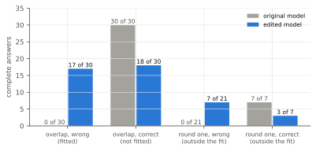

We ran the construction once. Its rule and its prediction were written down before any answer of the edited model existed. What is checked is the path of computation: the traces of the edited model's own answers, set against the two patterns. The answers are the evidence that the capability was restored. Measurements made on given text while building are part of the construction and are reported as such.
Each matrix reached part of what it was asked: between 14% and 56% of the requested move on the moving rows, with a median of 43% (Figure 4). The rows asked to stay moved 0.43 times as far as the moving rows at each matrix, and that movement accumulated along the path. Before the 18th matrix, the wrong answers' staying rows were 0.067 from their original state and the correct answers' rows 0.10, against a requested move of 0.13.
We stopped the build after 18 matrices, layers 0 to 8. At the 19th, nearly every solver step had to be shortened and one candidate took minutes instead of seconds. A reading of the partly edited model on the original text put the moving rows at 0.55 of the move along its direction and one whole move away to the side, which is 1.39 times further from their targets, in squared distance, than before any edit. The 18 matrices changed by 5.3% to 12.2% of their norm and took 43 minutes in total, including the passes that read the model before each one. The other 52 matrices are the original model's. We tested this model as it stood.
The edited model answered the 60 questions of the overlap and round one's 28 questions on its own (Figure 5). For the block of Section 3, the original and the edited model write (formatting marks removed):

The targeted calculation. Before the edit, 30 of the 60 answers add the descent energy and 30 subtract it. After the edit, 55 add it. Of the 30 that subtracted it, 29 now add it.
Complete answers. 17 of those 30 are complete. The other 12 that now add the descent make a different error later in the answer.
Damage. 12 of the 30 correct answers are no longer complete. Four of them now subtract the descent.
Outside the fit. Round one's 28 questions were not in the overlap or the fit. 7 of its 21 wrong answers become complete, where none was, and 3 of its 7 correct answers stay complete.
New errors. The edited model makes errors the original did not, in both groups alike. It reports the energy left after the climb as the available energy, adds the cost of the climb to the remaining energy, or computes the kinetic energy as twice or half its value.
Text. No answer keeps its text. 49 of the 60 open with a different sentence, and the median length rises from 529 to 578 steps for the answers that were wrong and from 438 to 544 for those that were correct.
We recorded the 60 answers of the edited model, aligned them to the same places by their computation, and measured each against the original patterns, with 0 at the wrong pattern and 1 at the correct one (Figure 6).

Over places 142 to 313, the answers that were wrong moved 0.79 of the way to the correct pattern. All 30 moved, from between −0.24 and 0.30 to between 0.49 and 1.24. They also moved 1.04 gaps in directions that lie along neither pattern, so in full distance they end 1.15 times as far from the original correct pattern as they began. In the terms of a walk to a hut one kilometre north, they ended 790 metres north and a kilometre east.
The correct answers moved 1.27 gaps. Both groups end at the same median, 0.76, and are 0.54 as far apart as before. After the edit the two groups compute alike, and they answer alike: 17 and 18 complete of 30.
Position along the gap goes with the calculation. The five answers that still subtract the descent lie at 0.30 to 0.62, and the 55 that add it at 0.49 to 1.26, with a median of 0.79. In 91% of pairs, the answer that adds the descent lies nearer the correct pattern. Position does not separate complete answers from incomplete ones (medians 0.75 and 0.79): the new errors are of a different kind from the one the gap measures. We have not shown that the sideways movement causes them. The changed wording alone can move a trace sideways.
The reading that stopped the build said the moving rows were further from their targets than before any edit. The model it described is the one that corrects the calculation in 29 of 30 answers. That reading measures the computation the edited model performs on the tokens of the original answers. When the edited model answers on its own it performs a different computation, already from the fourth step in 40 of the 60 answers. The rows of the build therefore describe a computation the edited model does not perform when it answers. The traces of its own answers (Section 6.3) are the measurement that does.
Round one protected its first edit in three further steps. B shielded what A broke, C kept A's repairs while cancelling its damage, and D made the edit ignore ordinary text. We ran the same ladder on the path edit, changing one thing per rung, and each model was tested as in Section 6 (Table 3).
| Rung | Change against A | Wrong, now complete | Correct, still complete | Available right | Along | To the side |
|---|---|---|---|---|---|---|
| A | The path edit of Section 5 | 17 of 30 | 18 of 30 | 17, 18 | 0.79 | 1.04 |
| B | The 12 correct answers A broke are added to the fit, asked to keep their state | 4 | 9 | 5, 13 | 0.63 | 1.00 |
| C | Starts from A's model; asks for the original state on the answers A damaged and A's state on the answers A repaired | 12 | 16 | 13, 17 | 0.87 | 1.44 |
| C, damaged only | C with only the damaged answers in the fit | 11 | 14 | 16, 17 | 0.95 | 1.16 |
| D | A rebuilt, with the size of each change measured by its effect on eight ordinary requests | 7 | 7 | 23, 23 | 1.05 | 0.78 |
B. Of the 12 answers B holds, 4 are complete, and 13 of the 18 correct answers it does not hold broke. The held rows are rows of the original text, and 51 of the 60 answers of B's model leave that text at the fourth token.
C. At the start of an answer, the rows of the damaged answers and the rows of the repaired answers are almost the same inputs: between 0.0% and 0.8% of a damaged answer's input lies outside the span of the repaired answers' inputs. A matrix cannot map one input to two outputs, and the fit satisfied neither request.
D. Its traces are the best of the round. Its wrong answers lie 1.05 along the gap with 0.78 to the side, and 25 of the 30 end nearer the original correct pattern than they began, against 11 for A. The available energy is right in 23 of 30 answers in both groups. But 31 of the 60 answers now state the required energy as climb plus descent, and only 7 of each 30 are complete.
Fractions of A. We also applied A's change at 0.27, 0.58 and 0.79 of its size. These models complete 7, 5 and 8 of the wrong answers and 15, 8 and 9 of the correct ones, against 17 and 18 for the whole edit.
On all five models of Table 3 the targeted calculation is repaired in 27 to 30 of the 30 wrong answers. The number of complete answers among them ranges from 4 to 17. No rung meets the goal of the ladder: every wrong answer corrected, no correct answer broken, and little effect on other text.